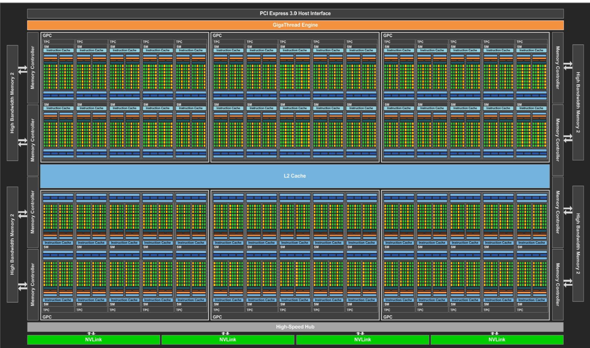
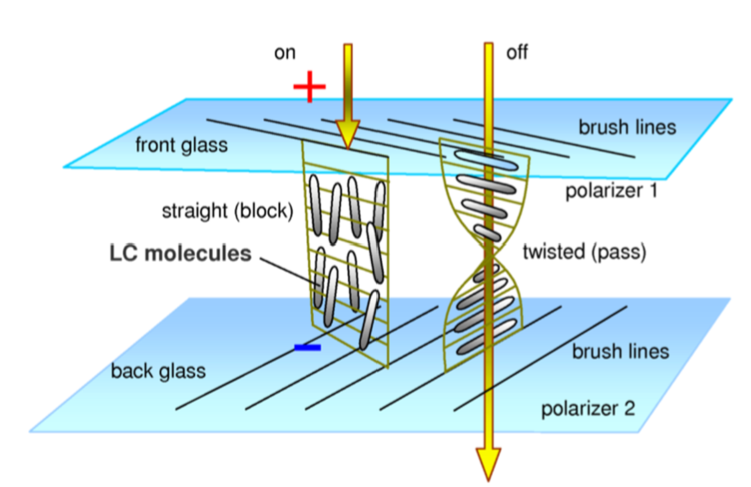
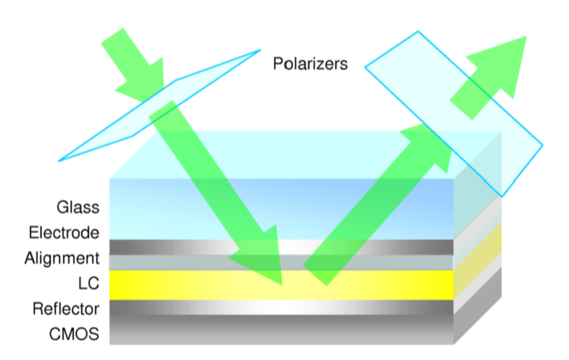

Graphics Hardware
(Extremely) high-level view of hardware:
flowchart LR m[Memory] <--> c[CPU] <--> g["Graphics Card"] --> d[Display]
Memory
Note: numbers may be outdated.
- CPUs work directly on data within registers.
- Register work as quickly as the CPU. No delay in access.
- Followed by L1 cache.
- Near CPU speed. Little delay.
- Feeds CPU registers.
- One for data and one for instructions
- Then L2 cache.
- Feeds L1 cache.
- Slower, ~order of magnitude.
- Larger than L1 cache.
- Some systems have an L3 cache.
- Again, larger but slower.
- Multiple MegaBytes
- Lastly, there is DRAM.
- Very large storage.
- Much slower.
Cache Lines
- CPU caches are organized as cache lines.
- 64 or 128 bytes of contiguous memory.
- A cache line is the basic amount of data that will be transferred at a time.
- Most data types are multiple bytes large.
- We'll access these bytes together.
- So they should fit in a single cache line.
- If data is not "aligned" to a cache line boundary, we may have to transfer
an additional cache line worth of bytes to load the data.
- Consider a double (8 bytes) where the middle bytes cross a cache line boundary.
DRAM
- Large and cheap.
- Optimized for size not speed.
- A DRAM Cell stores 1 bit.
- Stores the bit for 30 to 100 milliseconds.
- Contents must be refreshed regularly.
- Chips are typically organized as a 2D array of cells.
- You retrieve a row at a time.
- The retrieved row is stored in a fast row buffer on DRAM.
- First read of a row is slow, subsequent reads are faster.
- Could be 10x faster.
- Allows adjacent bits to retrieved quickly.
- First read of a row is slow, subsequent reads are faster.
- Reads are destructive.
- Contents of row buffer must be written back to memory.
- Designed to feed caches.
- Don't jump all over DRAM.
So:
- Avoid referencing DRAM if possible.
- Reference contiguous locations.
- Align data to cache lines.
- Make data structures as compact as possible.
- Group items of the same type (really size) together.
CPU
-
Double CPU speed every so often
- VLSI (manufacturing) improvements.
-
Smaller components -> faster chips.
- ~4GH is upper limit.
- Problematic quantum effects start to matter.
- Harder to cool the smaller surface area.
-
Chip area is still usable.
- Could increase cache sizes but has limits.
-
Solution: Multiple cores
- Slower processors, but collectively more power.
- Initially, issues with cache design. <- Don't really need to worry about it in this course.
- Problem is now developing parallel programs.
-
Ray tracing is good example of parallel programming.
- Primary rays are independent.
- Very close to linear scaling.
-
Tools:
- Low level threads.
- Good control.
- Good performance.
- Open MP.
- Compiler extension.
- Easy to learn.
- Compiler switch available to turn on/off for debugging.
- Use
#pragmastatements to suggest parallelism.#pragma omp parallel for private(i, j) for (i = 0; i < N; i++) for (j = 0; j < M; j++) ...
- Low level threads.
Graphics Card
flowchart LR B["Bus Interface"] R[DRAM] G[GPU] V[Video] B <--> R R <--> G B <--> G G --> V
Bus Interface
-
PCIe.
-
Transfer data to/from GPU.
-
Want to store as much as possible on the GPU.
- This is, in part, controlled by the driver.
- Try not to thrash between GPU and Main memory.
-
Alternatively, the GPU can be on the same chip as the CPU.
-
CPU and GPU now share same memory.
- Increased bandwidth.
- AMD APUs.
GPU DRAM
- Most space on GPU is devoted to processors.
- External memory needed.
- Either standard DRAM chips or GDDR chips.
- GDDR uses same memory cells as DDR3. (<- up to date?)
- Different bus interface.
- GPU memory doesn't co-exist with other devices.
- Fewer constraints than DDR.
- Much wider data bus for greater bandwidth.
- Higher clock speeds and better clock management.
- GPUs transfer large chunks of contiguous memory.
- GDDR has deeper row buffers.
- The GPU is more likely to request adjacent rows of memory.
Video (Output)
- To display, we need to encode the frame buffer into a video signal.
- In early graphics systems:
- Both GPU and video circuits accessed same memory.
- They had to share bandwidth.
- Early solution was VRAM with two data ports:
- Standard memory port for GPU.
- Shift register based port for video circuits.
- Both ports acted independently.
- Video circuits accessed a row of pixels at a time.
- Thus shift registers made sense.
- Modern graphics systems:
- Use double buffering and etc.
- Ping pong chips between GPU and video circuits.
- Multiple displays can be assigned different areas of memory.
Video Standards
VGA:
- Analogue.
- R, G, and B.
- Horizontal sync.
- Vertical sync.
DVI:
- Analogue & Digital.
- Different "versions".
- Connectors have same basic shape but different pins and capabilities.
HDMI:
- More standard connector shape.
- Wider range of signals (including Ethernet!)
- Two-way communication (HDMI CEC).
Display Port:
- Designed as replacement for HDMI.
- Smaller sized than HDMI.
USB-C:
- Can carry video signal.
- e.g. HDMI or Display Port.
- Both cable and connector spec not video.
GPU
- "Wheel of Reincarnation" - Graphics architectures repeat themselves over time.
- Special purpose hardware gives more performance for lower price.
- Trade-off between flexibility and performance.
SGI:
- Silicon Graphics (company).
- Saw lots of floating point computation in graphics.
- Developed Geometry engine.
- Computations in hardware.
- The first company to do this.
- Much cheaper than competition.
- As hardware evolved, chips became programmable.
- By hardware engineers not end users.
NVidia:
-
1990s startup.
-
Developed graphics hardware.
- Again much cheaper than competition (e.g. SGI).
-
Started with support for 2 textures.
- Wanted to simultaneously use more.
-
Introduced programmable fragment shaders.
- Initially simple, only small programs.
- Assembly level programming.
- Initially no branching.
- Program applied to multiple fragments in parallel.
-
Eventually introduced programmable vertex processor.
- Different instruction sets to fragment processor.
flowchart LR B["Bus Interface"] V["Vertex Processor"] I[Interpolation] F["Fragment Processor"] B --> V --> I --> F
- Eventually branching instructions added.
- Longer more complicated programs.
- Two seperate ISA (vertex + fragment processor) converged.
- High level languages:
- NVidia Cg.
- OpenGL GLSL.
The modern state:
- New problem:
- Dedicated vertex/fragment processors.
- If we have a lot of fragment work, vertex processors are idle.
- And vice versa.
- Solution: One set of processors to dynamically allocate where needed.
- Processors can handle either vertex or fragment work.
- Data cycles through the GPU.
- Starts with vertex programs.
- Output is pumped back through chip as input to fragment programs.
- Other types of shaders can be introduced:
- Geometry.
- Tessellation.
- Computation.
GPU Architecture

NVidia Pascal (GP100):
- Mostly computational cores (3840 of them).
- SIMD - Cores are a SIMD architecture.
- One instruction decode unit for a group of 32 cores.
- All cores perform the same instruction in lock step.
- Instruction decode on CPU is complicated.
- Instruction decode on GPU is much simpler.
- The SIMD unit with 32 processors is called a streaming multiprocessor (SM).
- SMs are grouped into GPC (Graphics Processing Cluster).
- GP100 organizes SMs into 6 GPCs.
- New level of organization for NVidia chips.

SIMD
- Consequences abound.
- Many cores execute the same instruction in parallel.
- Problem for control structures.
ifstatement:- Each core evaluates the condition.
- Each core is marked as true or false.
- Execute true cores then false cores serially.
- On average, half of the cores will be idle during execution of an
if.
whileloop:- Each core will evaluate the loop condition.
- If even one core is still looping, the others must wait.
- Possibly result in large number of idle cores.
forloop:- Not an issue since loop count is fixed.
Back to GPU Architecture
GP100:
- New memory organization.
- Memory chips are stacked on top of each other.
- ~4 dies in each stack, significantly increasing memory bandwidth.
- e.g. ~300 GB/s on previous architectures to ~720 GB/s.
Turing:
- Another significant evolution.
- Floating point and integer units can work in parallel.
- Tensor cores used for machine learning.
- RayTracing core.
- Ray-triangle intersections.
- Bounding volume hierarchies.
- A program on an SM can spawn other programs.
ADA:
- Even more cores.
- 12 GPCs
- 12 SMs per GPC.
- Improvements to tensor and ray tracing cores.
- Tensor and Ray-Tracing cores require special programming.
- i.e. Taking these cores into account.
- Some indications that bottleneck problems are starting to appear.
- Between Ray-Tracing cores and the rest of the SM.
Tiled Architectures
- Mobile devices.
- Power usage is concern.
- Tendency to write to same location many times.
- Too much DRAM access.
- Solution: Tiled Rendering
- Divide screen into tiles.
- Each tile is small enough to fit onto on-chip memory.
- Binning - Sort triangles into tiles.
- Process one tile at a time.
- Run complete pipeline on each triangle.
- Write finished tile to DRAM.
- Each triangle may be processed many times.
- Done on chip so it is fast despite being not optimal.
- In some cases, triangles are sorted to optimize hidden surface.
- z-buffer is kept on-chip.
- Deferred Rendering: Do not run entire frag shader until certain fragment will be displayed.
Displays - SLMs
Spacial Light Modulators (SLM):
- Dynamically changes (modulates) the optical properties of individual pixels.
LCD
- Most common SLM.
- Works by changing the polarization of light.
- Linear polarization: Light waves in only one orientation.
- Polarizers on both ends of the panel.
- Thin sheets that pass light of only one polarity.
- Select light with a particular polarization.
- Can also have optical elements that change the polarization.
- Liquid Crystals (LCD) are long molecules that can be aligned by applying
a voltage, this changes their optical properties.
- Arranged in small cells with three cells per pixel.
- See next image:
- On left, positive voltage is applied and the light is blocked.
- On right, no voltage, light passes through cell, but polarization is changed.
- LCD is basically transparent.

- An LCD has a backlight that provides the light needed to see.
- Mainly LED backlights.
- Backlight should be even to avoid intensity variations across display.
- Can use more than one LCD panel.
- Each panel can do 256 level of red, green, and blue.
- Stack 2 panels and get levels for each of red, green, and blue.
- This is HDR.
- First LCD panel (closest to backlight) becomes a pixel accurate variable backlight.
- An LCD is called a transmissive SLM since it modifies the light that passes through it.
Reflective Displays
- Change the light reflected off of an SLM.
LCoS (Liquid Crystal on Silicon):
- A reflective surface is placed on top of a CMOS chip.
- A Coating of liquid crystal on top of the reflective surface.
- Charges applied to the liquid crystal coating change its polarizing properties and whether light is reflected.
- No need for backlight
- Smaller pixels.
- F-LCoS: Even smaller pixels for head-mounted displays.
- Also used in projectors.

DMD (Digital Micromirror Devices):
- Uses very small mirrors on a silicon chip.
- Mirrors can move (orientate).
- In one configuration: The mirror reflects light towards the viewer.
- In another: Light can be reflected away from viewer.
- Can get grey by controlling the amount of time the mirror points towards the viewer.
- Switch/Orientate much faster than LCDs.
- Very efficient.
- Little light loss in reflection.
- Used in projectors.
- Low end DMDs produce colour by displaying red, green, and blue sequentially.
- High end uses three DMDs per pixel and combines the three images.
- Used in movie theatres.